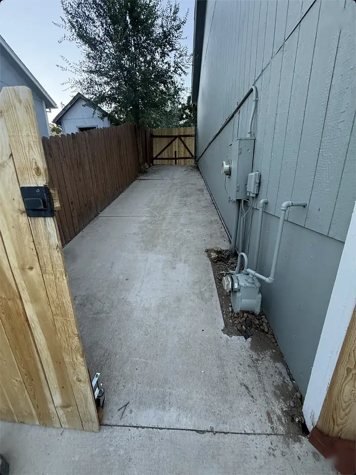

Fencing & Gates
Fences and gates that stay straight and close properly.
Wood privacy fencing, gates, and side-yard closures. New runs, replacements, and repairs to leaning posts and sagging gates.

What’s included
- Wood privacy fencing
- Walk and drive gates
- Side-yard closures
- Fence replacement
- Post and gate repair
A fence lasts as long as its posts. Set them deep, set them plumb, and give the gate a post that can carry it, and the fence will still look right years from now.
We build new fences and gates, replace failing sections, and fix the gate that drags on the concrete. Side yards often get a gate and a walkway together, so you only have one crew in the yard.
How we do it
The order of work.
- 01
Mark the line
Property line, post spacing and gate locations agreed up front.
- 02
Set the posts
Posts set deep and plumb, with heavier posts at the gates.
- 03
Build it out
Rails and boards run straight and level with the grade.
- 04
Hang and adjust
Gates hung, latched and adjusted to swing clear.

Typical detail
Built to stay straight.
- Height
- 6 ft privacy, typical
- Posts
- 8 ft on center max, 24–36 in deep in concrete
- Gate post
- 6×6, set deeper than the line posts
- Gate
- Braced from the hinge side up, so it does not sag
- Bottom
- A kickboard keeps the boards off the dirt
Typical numbers for Northern Nevada homes. Your soil, slope and use set the final specs, and they are written into your estimate.
 Before
BeforeRelated project
Side yard, concrete and gate
An overgrown side yard cleared, concreted wall to fence, and closed off with a new wood gate.
See the full projectDo you repair fences?
Yes. Leaning posts, broken boards and sagging gates are all fixable without replacing the whole run.
Can you do the walkway and the gate together?
Yes, and it is usually the better plan: the gate gets set to the finished height of the walkway.
Free estimate
Planning a fencing project?
A few photos and a rough idea are plenty to start. Estimates are free, and you will talk to the owner.
- Call or text
- 775-440-3757
- @bighorn.build.nv